First print of the robot. Batch 1 tests two things never tried before: that a leg clicks onto its crank pin (the snap bead) and that the self-tapping M2 screws bite in their Ø1.6 pilot holes. Print the blue plate (base) whole, the yellow plate (inner mechanisms) whole and, from the red plate, only leg-3.
Works if: Crank pins, snap beads and collars free of support residue; leg-3's tube round and clean inside; sleeves and idlers stuck to the bed; and on assembly, leg-3 clicks onto its pin and the M2 screws bite without splitting the plastic. Any fault: a photo to Claude, and only that part is fixed.
| Plate | What for | g | h |
|---|---|---|---|
| print/robot-blue-base.3mf | Base (blue). Printed foot down; the support (4.2 g) is on the outside of the bowl and is sanded off. | 8.02 | 0.87 |
| print/robot-yellow-inner.3mf | Inner mechanisms (yellow): 17 parts (spine, cranks 1-4, idlers 1-3, sleeves, transfer gear, drive unit, pinion, cell holder and lid). The drive unit is printed turned -90° (on its side) and thicker (2 mm) since 2026-11-24: if the old one broke, print only «drive-unit.stl» from this plate (3.3 g, 16 min). Some of its support rests on the part itself: take it off slowly with pliers. | 14.5 | 1.24 |
| print/robot-red.3mf (leg-3 only) | Only leg-3, to test the snap. In Bambu Studio it is called «leg-3-7.stl». In the red plate picture (print/images/robot-red.png) it is at the top, right of the body (first row, second part). Remove the other parts from the plate before slicing. Since 2026-11-24 the joint between the cone (the pin tube) and the leg is thicker (Ø4.7 with a blend): reprint leg-3 if it broke. When removing the support, hold the leg by the arm near the body, never by the tube: the support does not touch the joint, but levering the arm bends it. | 6.52 | 0.44 |
Do not print yet:
Printed parts
Hardware
| 1 × | 2 x 5 mm LED + resistor |
| 1 × | 3 x conical spring 7 mm |
| 1 × | 6 x AG13 / LR44 cell |
| 1 × | JST-XH 3-pin (pair) |
| 1 × | M2×12 socket head |
| 2 × | M2×4 socket head |
| 1 × | M2×5 socket head |
| 3 × | M2×6 socket head |
| 1 × | N10 motor 3 V (metal gearbox, D shaft Ø3) |
| 1 × | SS12D00G3 switch |
| 1 × | nickel strip 0.3 |
Tools: 1.5 mm hex key, pliers, fine tweezers, caliper, rubber band, a drop of glue, sandpaper or a craft knife for the support
Every part, with its step number:
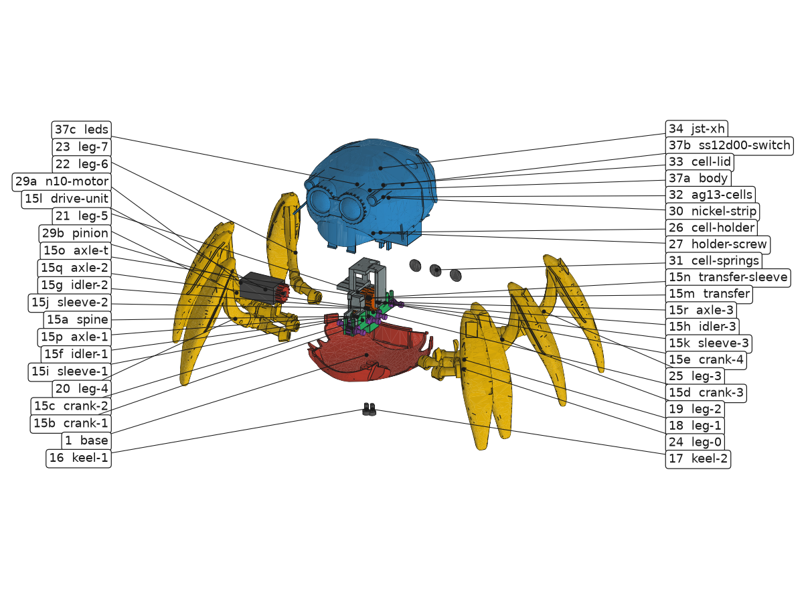
1base · start with
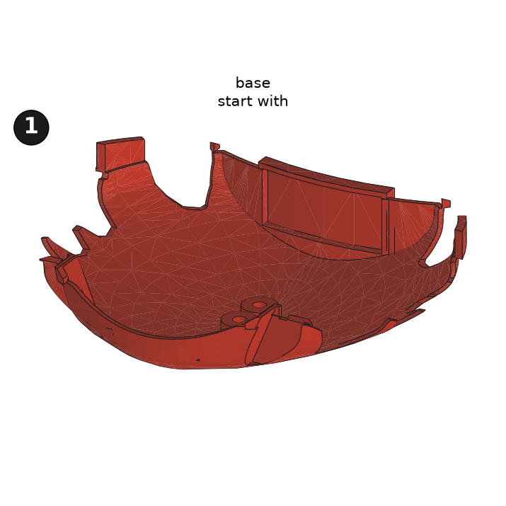
2crank-1 · on the bench: in from above
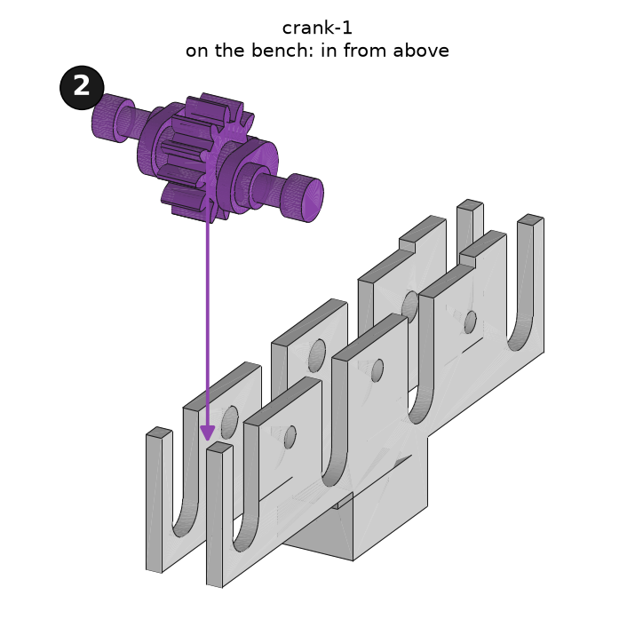
Put the spine (the long yellow box) on the table. Lower crank 1 (one dot on the hub, +X side) into its slots, with the cranks at pose 0: the one the dots mark.
Mark: 1 dots on the +x web hub (which crank, which end right); its gear is printed at its phase: set at crank pose 0
✓ The crank drops into its two slots without forcing and sits with the cranks at pose 0. If the pin, snap bead or collar carry support residue, clean them first.
3crank-2 · on the bench: in from above
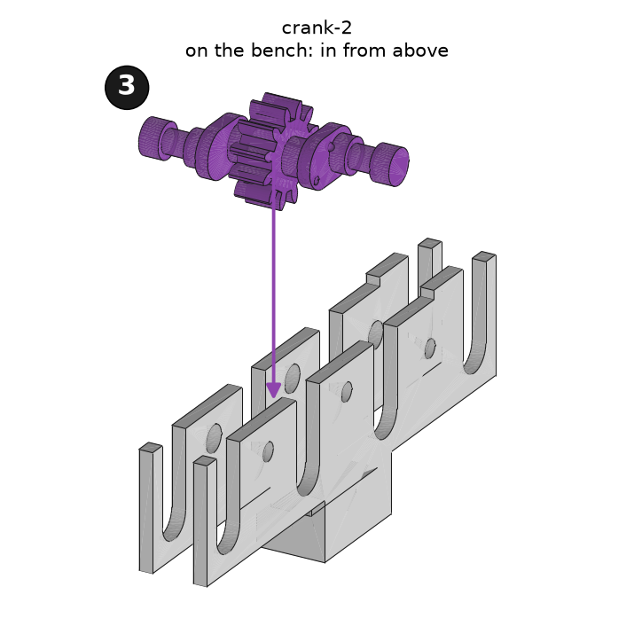
Same as before: crank 2 (2 dots on the hub) into its slots, cranks at pose 0.
Mark: 2 dots on the +x web hub (which crank, which end right); its gear is printed at its phase: set at crank pose 0
✓ Level with the ones before, cranks at pose 0 (dot marks lined up).
4crank-3 · on the bench: in from above
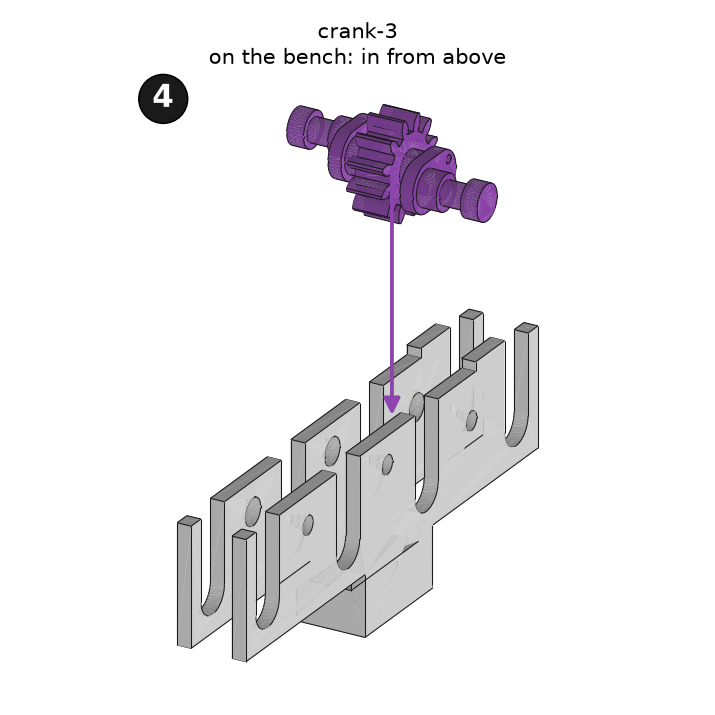
Same as before: crank 3 (3 dots on the hub) into its slots, cranks at pose 0.
Mark: 3 dots on the +x web hub (which crank, which end right); its gear is printed at its phase: set at crank pose 0
✓ Level with the ones before, cranks at pose 0 (dot marks lined up).
5crank-4 · on the bench: in from above
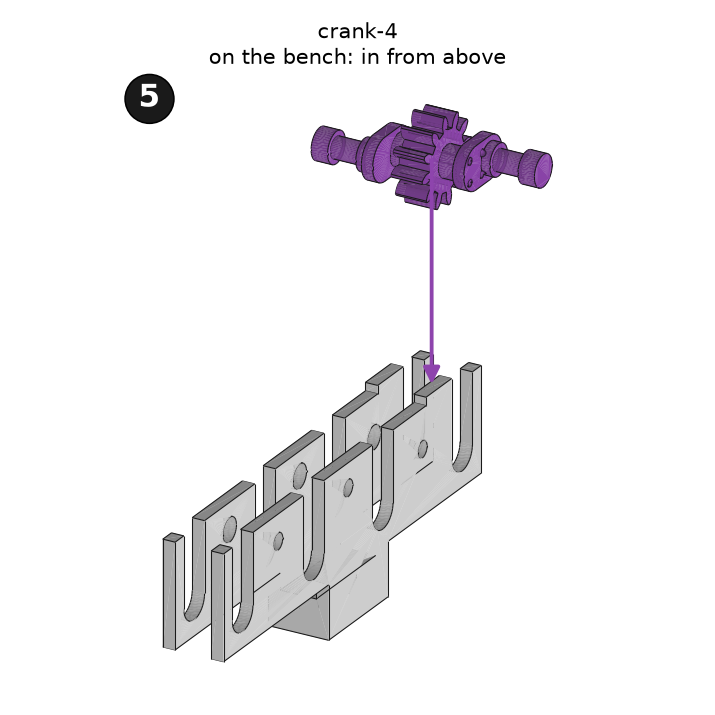
Same as before: crank 4 (4 dots on the hub) into its slots, cranks at pose 0.
Mark: 4 dots on the +x web hub (which crank, which end right); its gear is printed at its phase: set at crank pose 0
✓ Level with the ones before, cranks at pose 0 (dot marks lined up).
6idler-1 + sleeve-1 · on the bench: in from above
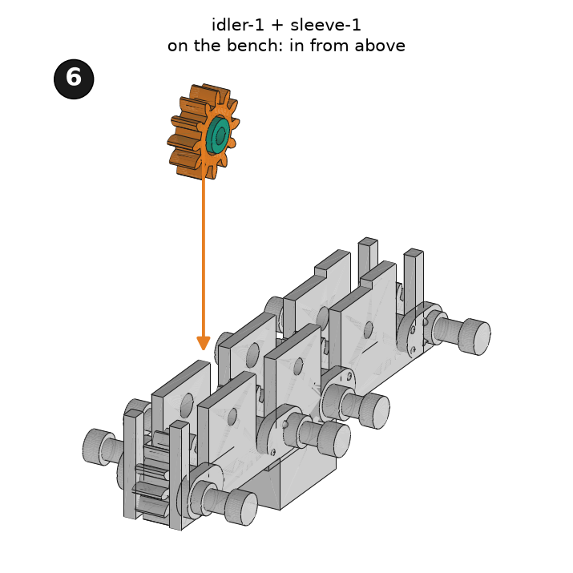
Put sleeve 1 into idler 1 and lower them between the neighbouring cranks; the teeth mesh by themselves because the phase is printed into the gears.
Mark: any tooth: the cranks' phases are printed in their gears, the idler meshes as it drops in at pose 0
✓ It drops to the bottom and both neighbouring cranks turn a little when the idler turns. Nothing to tighten yet; the screw comes later.
7idler-2 + sleeve-2 · on the bench: in from above
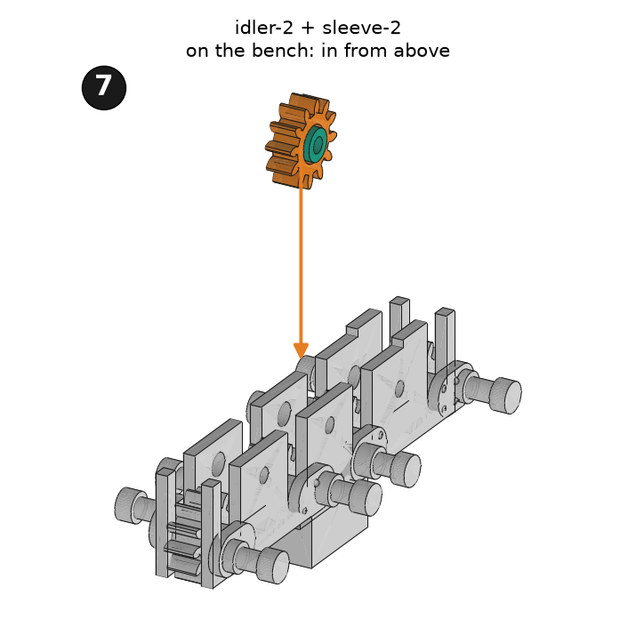
Put sleeve 2 into idler 2 and lower them between the neighbouring cranks; the teeth mesh by themselves because the phase is printed into the gears.
Mark: any tooth: the cranks' phases are printed in their gears, the idler meshes as it drops in at pose 0
✓ It drops to the bottom and both neighbouring cranks turn a little when the idler turns. Nothing to tighten yet; the screw comes later.
8idler-3 + sleeve-3 · on the bench: in from above
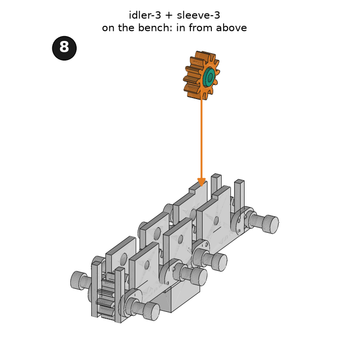
Put sleeve 3 into idler 3 and lower them between the neighbouring cranks; the teeth mesh by themselves because the phase is printed into the gears.
Mark: any tooth: the cranks' phases are printed in their gears, the idler meshes as it drops in at pose 0
✓ It drops to the bottom and both neighbouring cranks turn a little when the idler turns. Nothing to tighten yet; the screw comes later.
9transfer + transfer-sleeve · on the bench: in from below
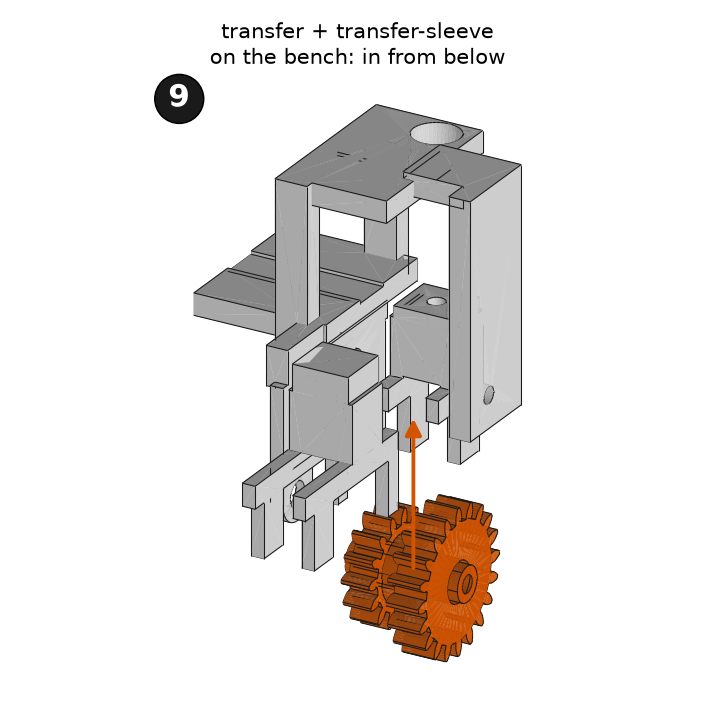
Put the drive unit upside down. Fit the transfer gear with its sleeve between the two cheeks.
Mark: any tooth (meshes idler 2 and the pinion as it goes in)
✓ The transfer gear turns freely between the cheeks and the holes of the sleeve and the cheeks line up.
10axle-t · on the bench: in from the −X side
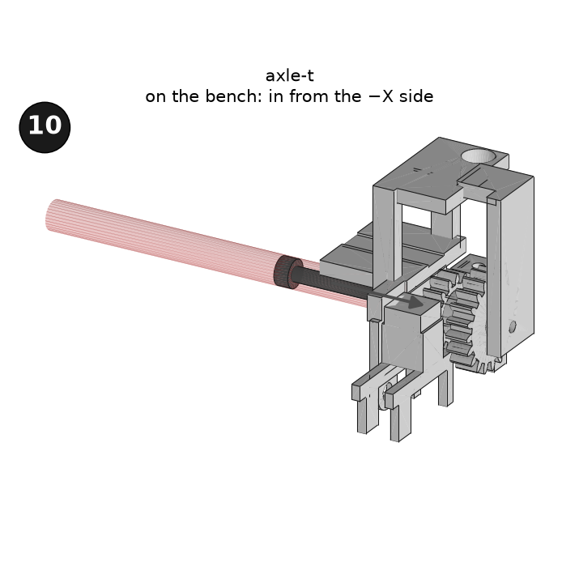
With the 1.5 mm hex key, drive the M2×12 screw from the −X side through the cheeks and the sleeve. It self-taps in the Ø1.6 hole: it goes in with pressure, without forcing.
✓ The transfer gear still turns freely with the screw in, and the screw is firm.
11drive-unit + transfer + transfer-sleeve + axle-t · on the bench: in from above
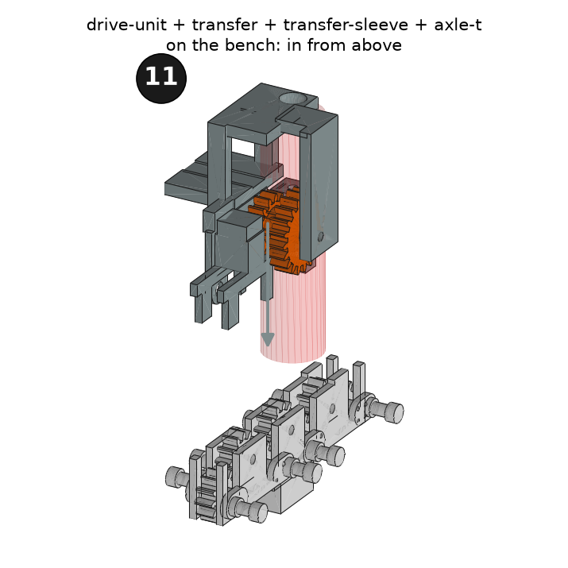
Turn the drive unit, with the transfer gear in, over and lower it onto the spine: the tongues go into slots 1 to 3 and the lugs lie flat on the −X wall. Seat it with a hand on lug 2.
✓ The tongues are inside slots 1 to 3 and the drive unit does not move when touched.
12axle-1 · on the bench: in from the −X side
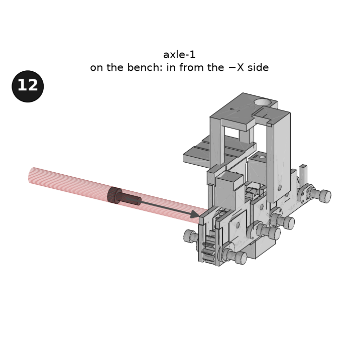
M2×6 screw from the −X side with the 1.5 mm hex key: it goes through sleeve 1 and its tip into the pilot hole in the spine's +X wall. It is idler 1's axle.
✓ Idler 1 turns freely and the screw is firm, with no play in the spine.
13axle-2 · on the bench: in from the −X side
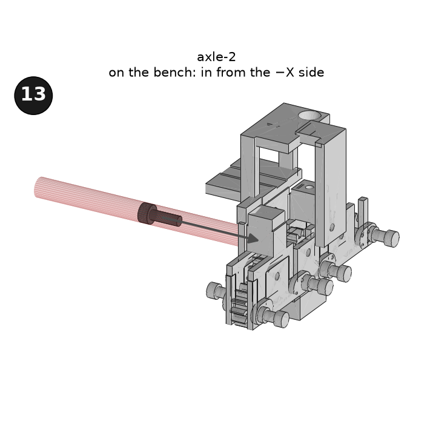
M2×6 screw from the −X side, as before, for idler 2.
✓ Idler 2 turns freely and the screw is firm.
14axle-3 · on the bench: in from the −X side
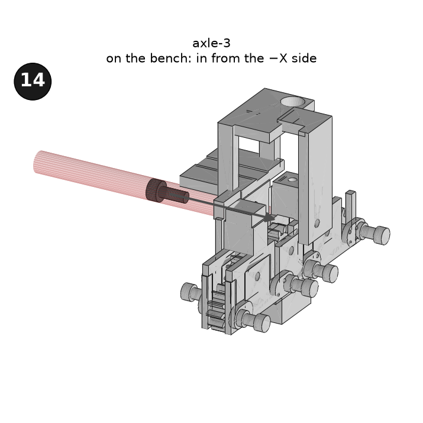
M2×5 screw (this one is shorter, careful) from the −X side for idler 3.
✓ Idler 3 turns freely and the screw is firm.
15spine + crank-1 + crank-2 + crank-3 + crank-4 + idler-1 + idler-2 + idler-3 + sleeve-1 + sleeve-2 + sleeve-3 + drive-unit + transfer + transfer-sleeve + axle-t + axle-1 + axle-2 + axle-3 · in from above
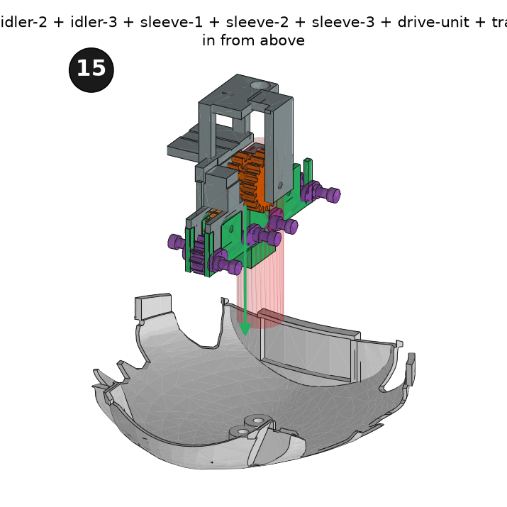
Carry the whole spine assembly onto the keel seat in the base. Crank 4 comes loose: hold it with a rubber band until the cell holder covers it. Seat it with a hand on lug 2.
✓ The assembly rests on the keel without rocking and the keel's holes are under the spine's.
16keel-1 · in from below
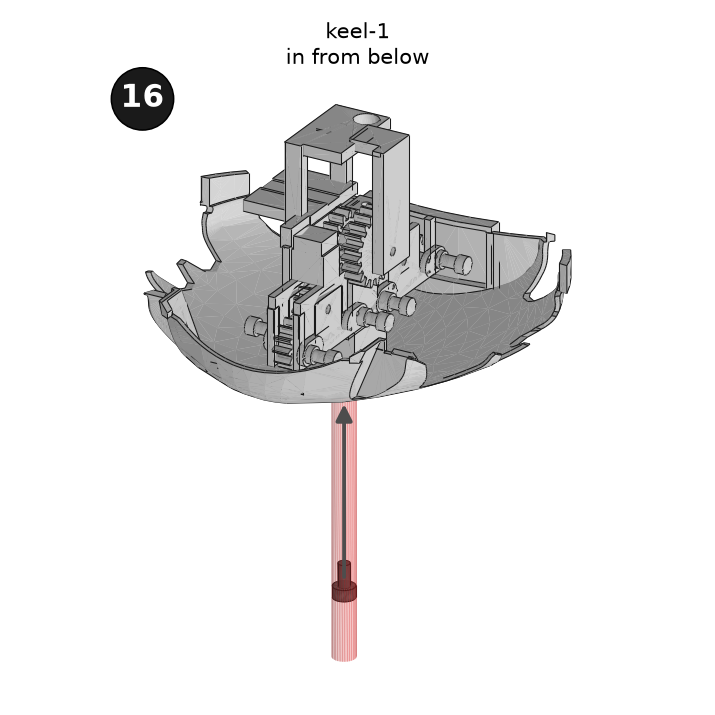
Rest the base on its side and drive one M2×4 from below with the 1.5 mm key.
✓ The screw is firm and the spine does not move in the base.
17keel-2 · in from below
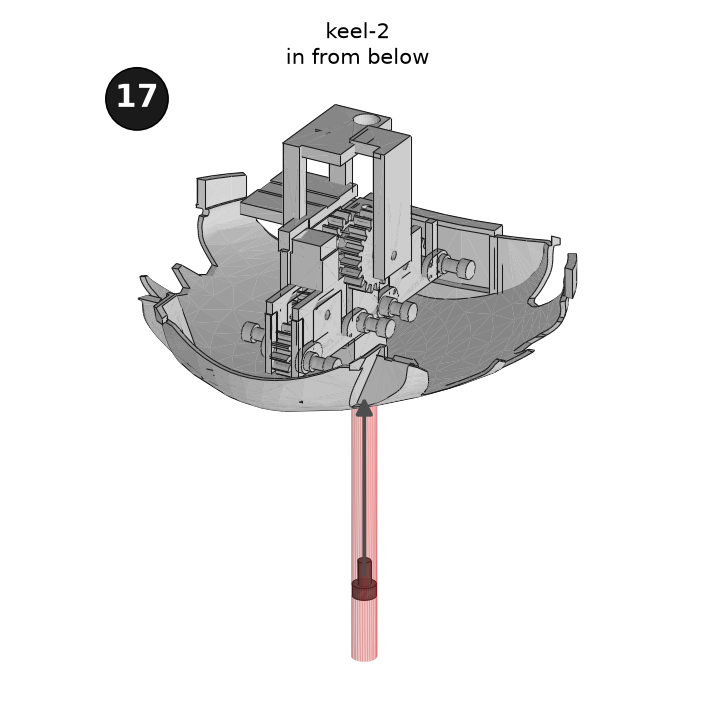
The second M2×4 from below, the same way.
✓ With both screws the spine does not move in the base.
18leg-1 · down 30 mm, then -X+Y-Z 6.6 mm
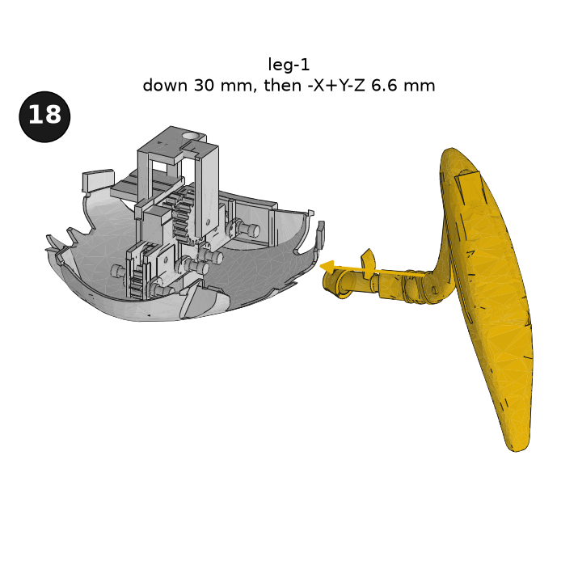
Cranks at pose 0 (dot marks). Lower the leg beside the pin and slide it inwards along the pin: the bead clicks into the groove.
✓ You hear or feel the click, the leg does not come off when moved and does not turn more than it should. If it does not go on or breaks, take a photo and send it to Claude: only that part is fixed.
19leg-2 · down 30 mm, then -X-Y-Z 6.6 mm
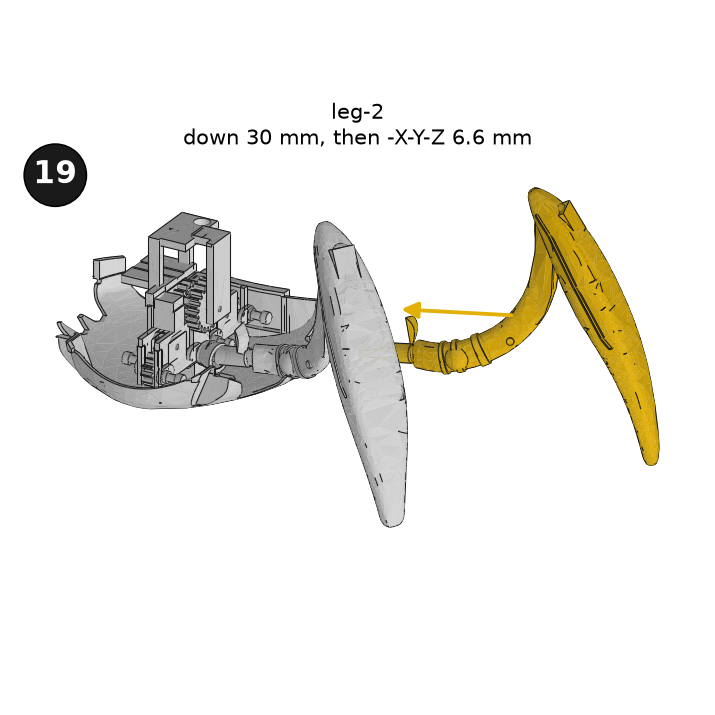
Cranks at pose 0 (dot marks). Lower the leg beside the pin and slide it inwards along the pin: the bead clicks into the groove.
✓ You hear or feel the click, the leg does not come off when moved and does not turn more than it should. If it does not go on or breaks, take a photo and send it to Claude: only that part is fixed.
20leg-4 · down 30 mm, then +X-Y-Z 6.6 mm
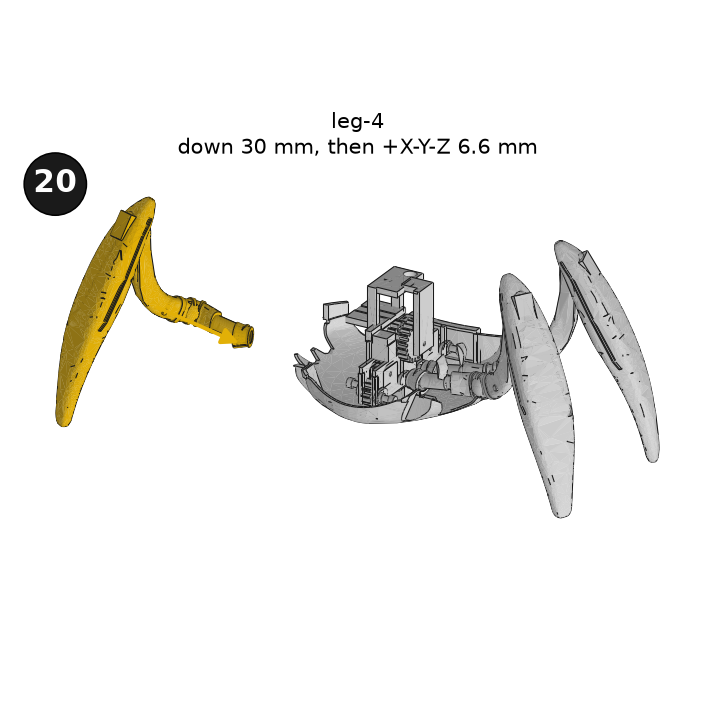
Cranks at pose 0 (dot marks). Lower the leg beside the pin and slide it inwards along the pin: the bead clicks into the groove.
✓ You hear or feel the click, the leg does not come off when moved and does not turn more than it should. If it does not go on or breaks, take a photo and send it to Claude: only that part is fixed.
21leg-5 · down 30 mm, then +X-Y-Z 10 mm
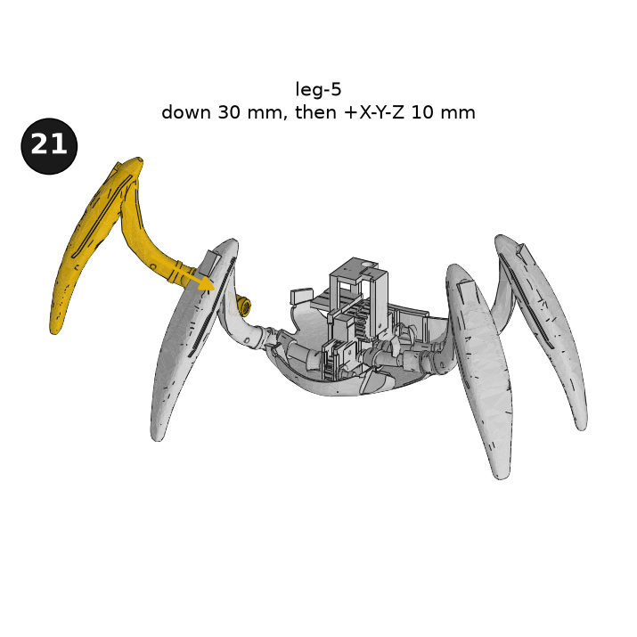
Cranks at pose 0 (dot marks). Lower the leg beside the pin and slide it inwards along the pin: the bead clicks into the groove.
✓ You hear or feel the click, the leg does not come off when moved and does not turn more than it should. If it does not go on or breaks, take a photo and send it to Claude: only that part is fixed.
22leg-6 · down 30 mm, then +X+Y-Z 10 mm
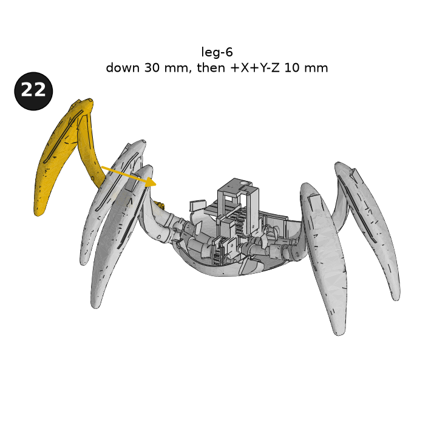
Cranks at pose 0 (dot marks). Lower the leg beside the pin and slide it inwards along the pin: the bead clicks into the groove.
✓ You hear or feel the click, the leg does not come off when moved and does not turn more than it should. If it does not go on or breaks, take a photo and send it to Claude: only that part is fixed.
23leg-7 · down 30 mm, then +X-Y-Z 6.6 mm
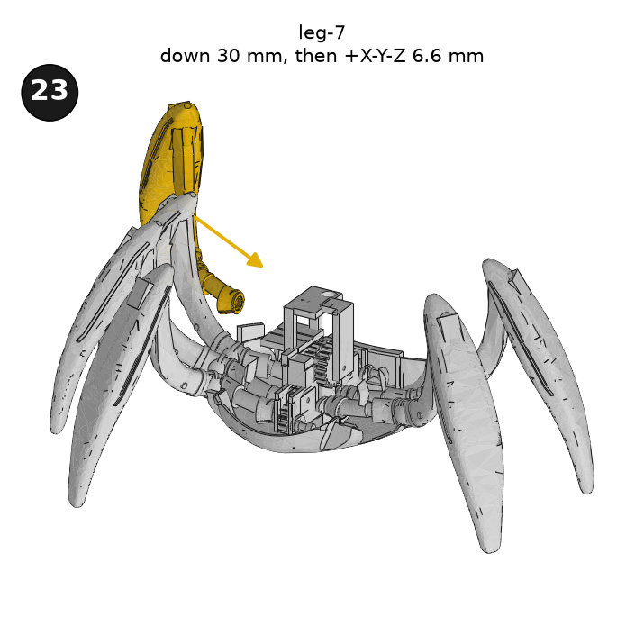
Cranks at pose 0 (dot marks). Lower the leg beside the pin and slide it inwards along the pin: the bead clicks into the groove.
✓ You hear or feel the click, the leg does not come off when moved and does not turn more than it should. If it does not go on or breaks, take a photo and send it to Claude: only that part is fixed.
24leg-0 · down 30 mm, then -X-Y-Z 6.6 mm
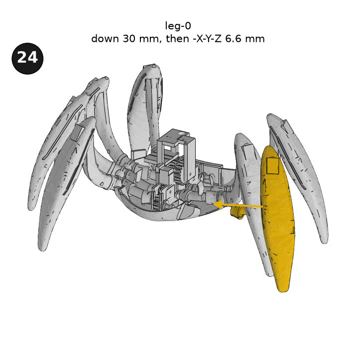
First turn the cranks half a turn (pose 12 instead of 0). Lower the leg beside the pin and slide it inwards along the pin: the bead clicks into the groove.
✓ You hear or feel the click, the leg does not come off when moved and does not turn more than it should. If it does not go on or breaks, take a photo and send it to Claude: only that part is fixed.
25leg-3 · down 30 mm, then -X-Y-Z 6.6 mm
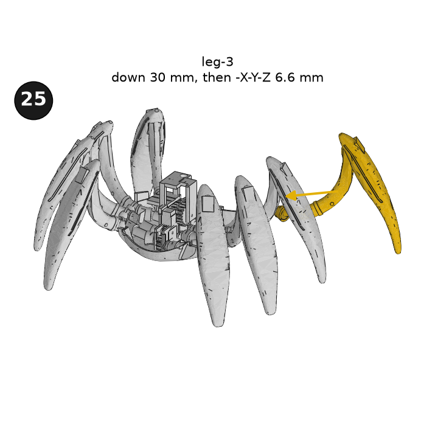
The leg printed alone in batch 1 to test the snap. First turn the cranks half a turn (pose 12). Lower the leg beside the pin and slide it inwards along the pin: the bead clicks into the groove.
✓ This is batch 1's test: the leg goes on with a click, its tube turns round and clean on the pin and it does not come off. If so, print batch 2.
26cell-holder · down 34 mm, then -Y 5 mm, then down 6 mm
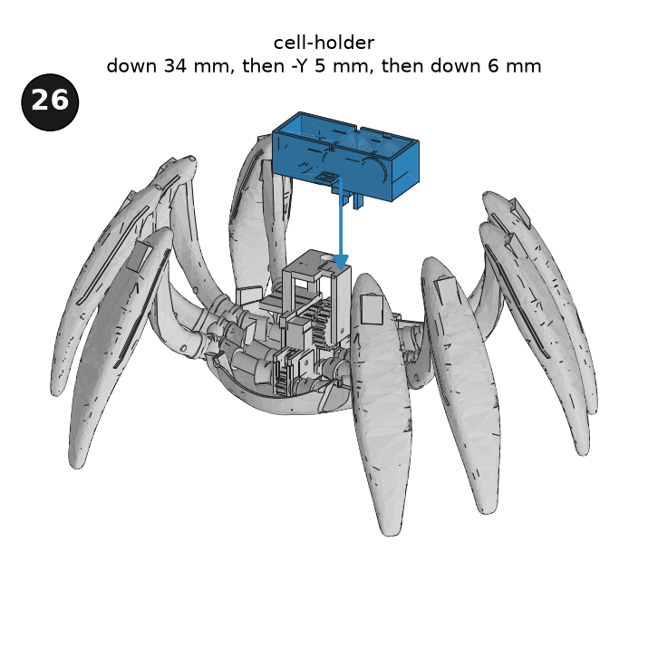
Lower the cell holder behind the top plate of the motor clamp, slide it 5 mm inwards underneath and lower it onto lug 2.
✓ It sits on lug 2 and covers crank 4 (take the rubber band off).
27holder-screw · in from above
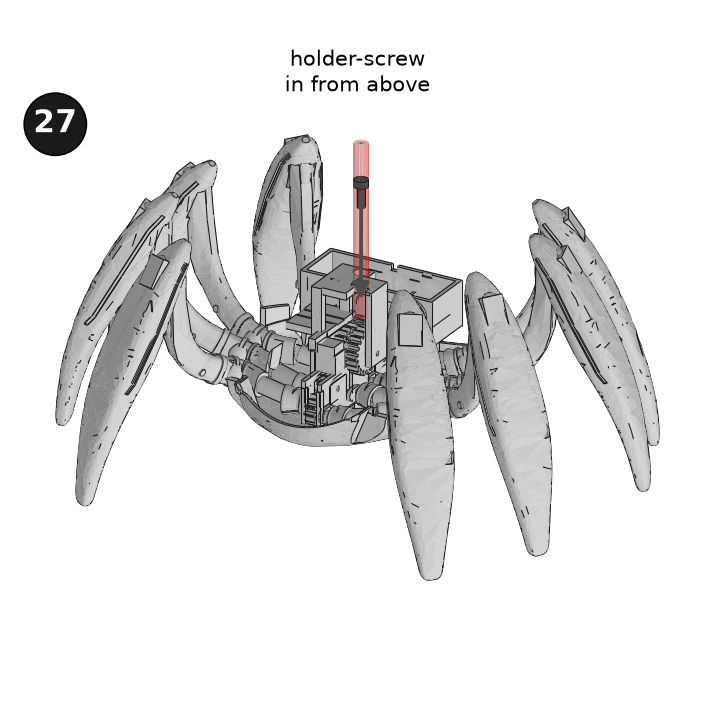
M2×6 screw with the 1.5 mm key from above, with the motor clamp still empty. It self-taps.
✓ The cell holder is fixed to the drive unit, with no play.
28pinion · on the bench: in from the +X side
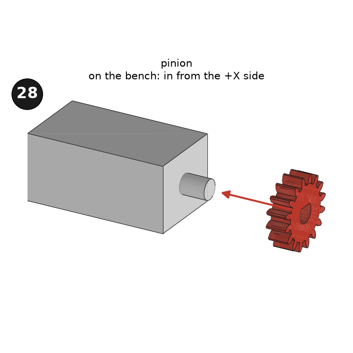
Press the pinion onto the motor shaft as far as it goes, with the pinion's flat on the shaft's flat (the shaft is D-shaped).
Mark: any tooth
✓ It is all the way on and does not turn freely on the shaft.
29n10-motor + pinion · +X 38 mm
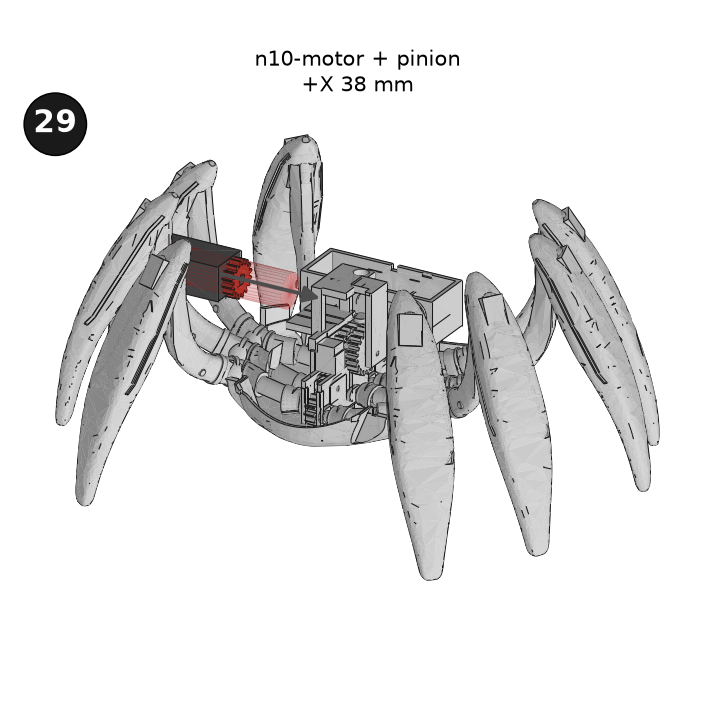
With the pinion on, slide the motor by hand towards +X: the pinion goes into the plates' slots and meshes with the transfer gear.
✓ The motor sits in its clamp and turning the pinion by hand moves the gear train.
30nickel-strip · in from above
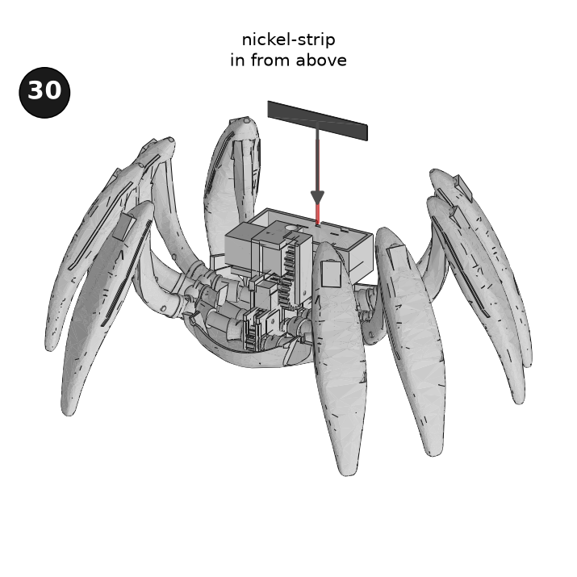
With the tweezers (Ø1 tip) push the nickel strip by its top edge into its slot.
✓ The strip is at the bottom of its slot, towards the back.
31cell-springs · down 30 mm, then -Y 2 mm
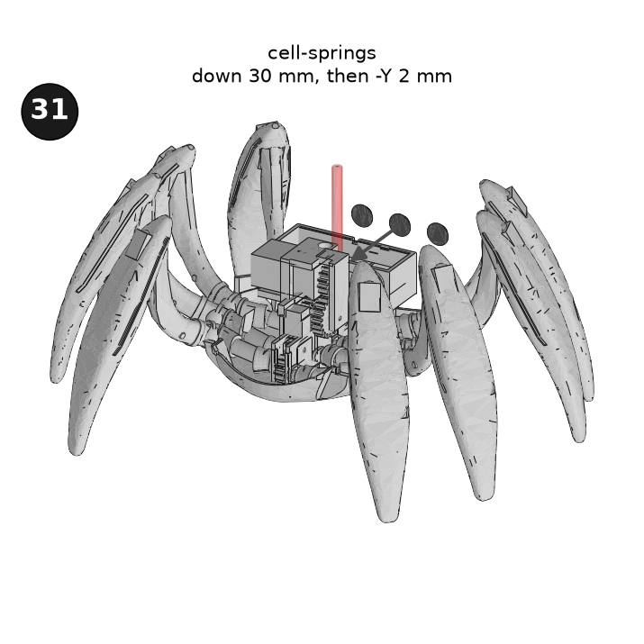
Drop the 3 conical springs into the cradle and push the middle one 2 mm with a fingertip against the front wall, into its recess.
✓ The three springs stand straight in place.
32ag13-cells · in from above
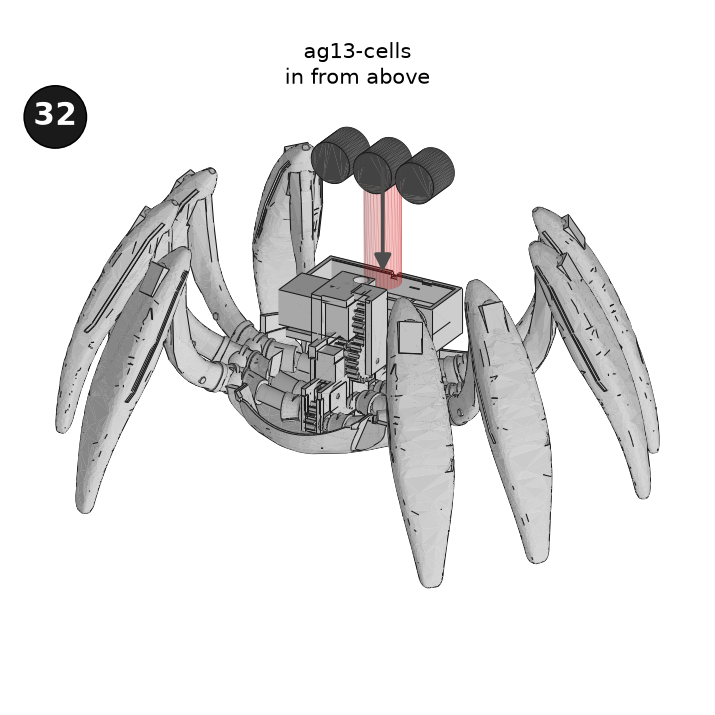
Put the 6 cells in with the + side towards the nickel strip (back); the holder's back wall has a «+» engraved. Press them against the spring.
Mark: + face toward the nickel strip (back); '+' engraved on the holder's back wall
✓ All with + to the back, resting against their spring.
33cell-lid · in from above
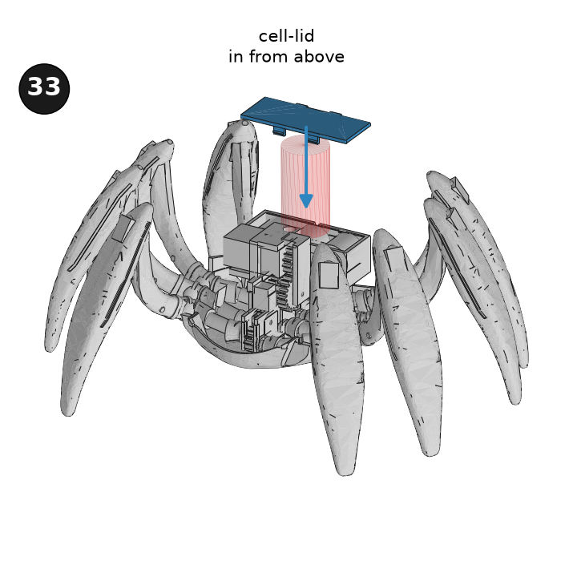
The lid goes on one way only: the back lips over the back wall and the key in the back notch. Press until it closes.
Mark: keyed: back lips over the back wall, key in the back notch (goes on one way)
✓ It closes with a click and opens by lifting the back lips.
34jst-xh · in from above
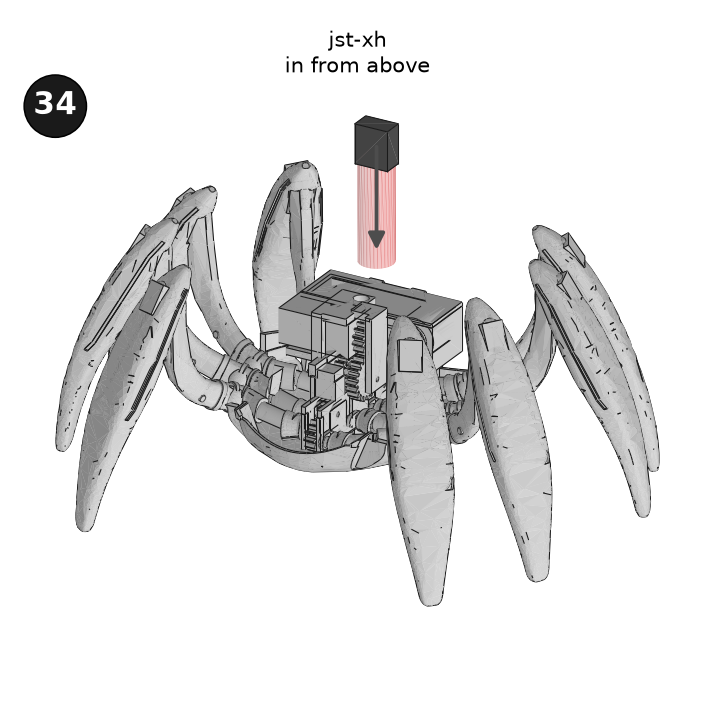
Plug in the 3-pin JST-XH (the pair). The motor is wired so the cranks turn with the pose falling; if the robot walks backwards on test, swap the two motor wires.
✓ The connector snaps in and holds.
35leds · on the bench: up 10 mm, then -Y 12 mm
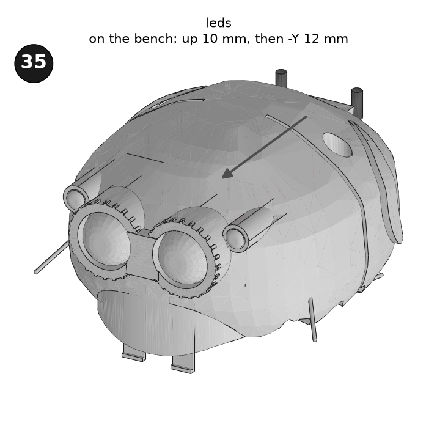
On the bench: push each LED from inside the body into its eye hole, with a fingertip on the back of the LED pushing forward. Do this before fitting the body.
✓ Both LEDs sit in their eye holes and do not fall out when the body is moved.
36ss12d00-switch · on the bench: in from the −Y side
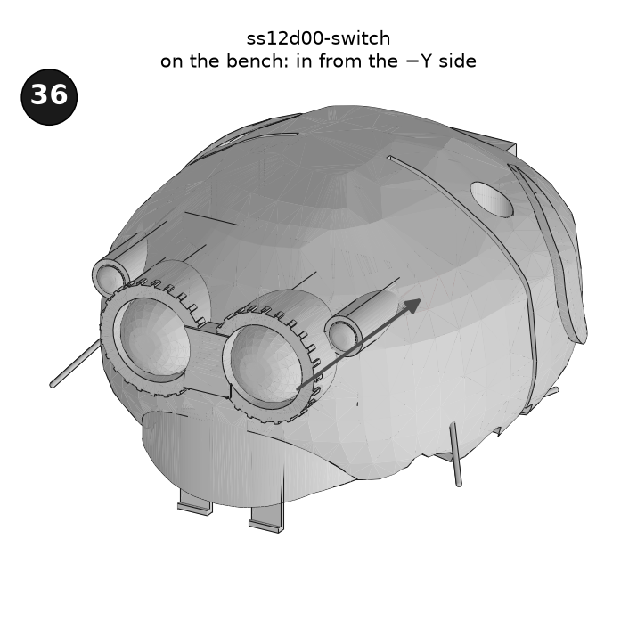
On the bench: lever to the back, push the switch in from the front against the body's stop; press with a fingertip until the lever sticks out. A drop of glue. Do this before putting the body on the base.
✓ The switch does not move, with its lever out at the back.
37body + ss12d00-switch + leds · in from above
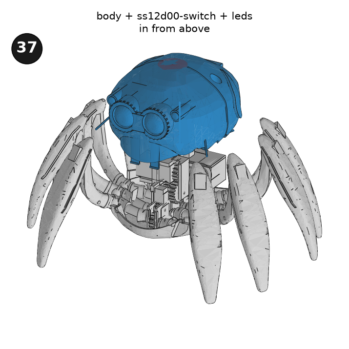
Set the cranks at pose 12 (half a turn) and press the body, with the switch and LEDs, on from above with a hand on the roof: two clicks at the front.
Mark: body-on mark: crank pose 12 (plan step 17)
✓ Two clicks at the front, the legs move without rubbing the body. Switch on: the robot walks forwards (−y, towards the mouth face).
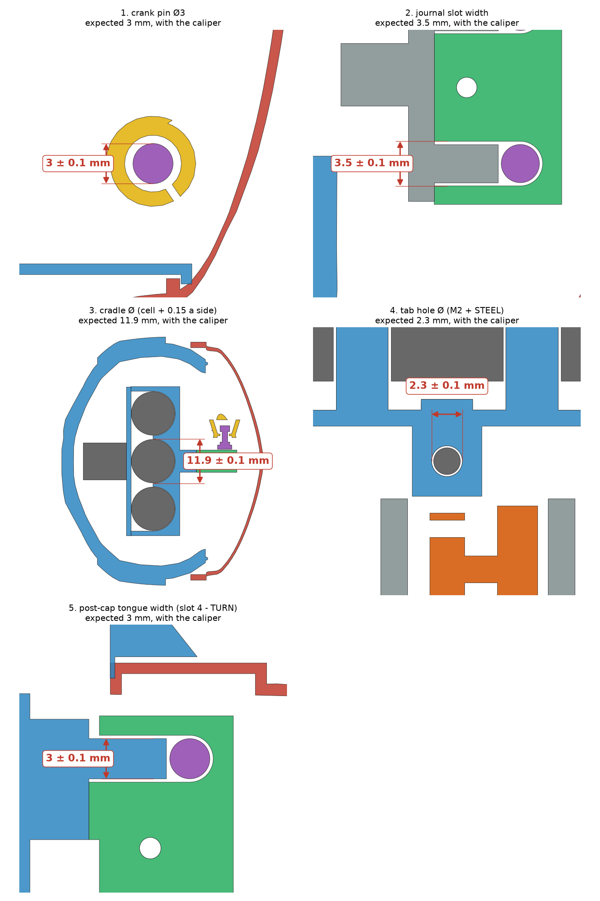
| Measurement | When |
|---|---|
| 1. crank pin Ø3 | when the yellow plate comes off, before assembly |
| 2. journal slot width | with the spine printed, before assembly |
| 3. cradle Ø (cell + 0.15 a side) | with the cell holder printed, before the cells go in |
| 4. tab hole Ø (M2 + STEEL) | with the base printed, before assembly |
| 5. post-cap tongue width (slot 4 - TURN) | with the cell holder printed, before assembly |